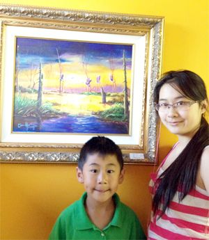

8岁乐乐捐献画作义卖募捐为公益
一年一度的Sundance School Gala，这个由SPA(家长会)组织的学校最大的Fundraising Party，对本校师生和家长们来说不仅好玩而且非常有意义。每到这时家长们在忙碌着，老师们在忙碌着，孩子们也在忙碌着，都在想着能为学校做点儿什么。Sundance School二年级的学生蒋兴乐(Charles Jiang)，也动起了自己的小脑筋：我在莎伦画院跟Jeffery老师学画一年多了，可不可以把我的画捐给学校呢？他把这个想法跟妈妈说了，妈妈觉得他的想法很好，决定与SPA负责人沟通联系…… 得到妈妈的大力支持，乐乐从自己的画作里认真地挑选了一幅得意的作品“ Picnic Party” ，就和妈妈，姐姐一起开始忙起来了，买镜框、装裱、照相。几天后，乐乐把一幅精心制作的精美画作捐给了Gala。他真心地希望用自己的方式为学校募捐。乐乐的愿望实现了。在盛大的Gala Party上，乐乐的作品备受好评，得到了许多家长的喜爱。最后以$100的价格被一位有爱心的家长竟拍走了，现场还有几位家长因为没有买到这幅作品而深感遗憾。乐乐听到自己画的画有这么多人喜欢，高兴极了，他告诉妈妈：以后一定要继续努力好好学画，明年要拿出更好的作品为学校募捐到更多的钱。其实乐乐学画是受了姐姐很大的影响，姐姐—蒋雪静是弟弟的Role Model。蒋雪静在乐乐同龄时曾获得全美PTA组织的National PTA Reflections Contest全国第一名；还在美国农业部举办的环保绘画竞赛中取得郡第一名，及新泽西州第三名的好成绩。因为想要画得跟姐姐的画一样好，乐乐才在一年前开始学画画。姐弟俩现在都在莎伦画院学习。
多年以来莎伦画院的很多学生卖画卖得很出色，有的学生是长期有人来买新作；有的学生是客户指定要什么作品，再特別去画；还有的学生每年定期在欧州裔社交圈中举办个人画展，每年都会卖掉几乎全部的作品；还有不少学生的作品被艺术家和商家不定期地前来挑选。很多学生的作品被选作艺术品和生活用品的图案装饰设计，例如胸针、地毯、掛毯和马克杯等…….但是像乐乐这样，年纪这么小就主动想到以画作去义卖，收入用以公益的并不多见。每个人的天赋才情只有真正与社会服务和奉献联系在一起，才有永恒的价值。而这一切并非仅仅是为了上大学、上名校加分！可以预见蒋乐乐将会成为一位热心奉献的少年领导者。
（2013）